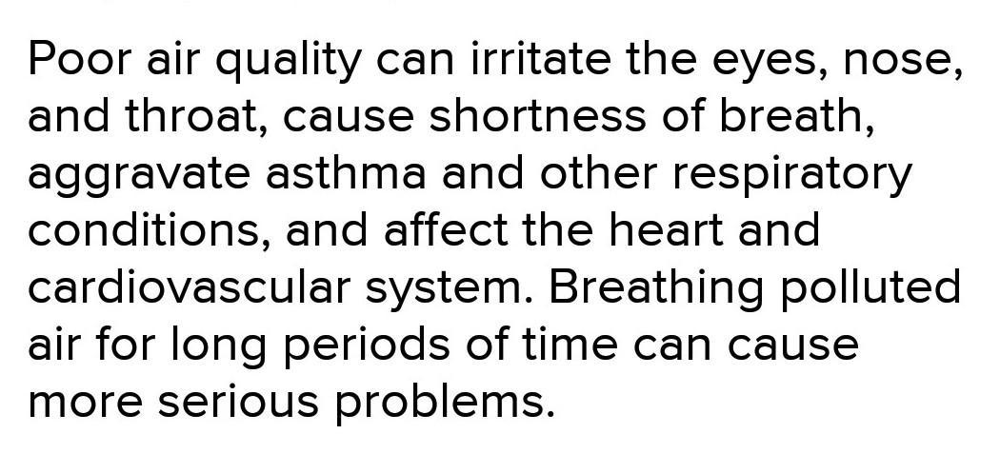

Let's Learn About AQI
An air quality index is used by government agencies to communicate to the public how polluted the air currently is or how polluted it is forecast to become. Public health risks increase as the AQI rises. AQI allows us to prepare for our day by understanding how dangerous the pollution in the air is and how it might affect our health based on how high or low the index is. Shows which grou[s of people are more likely to be affected by said changes in air quality so we can better protect ourselves and the community by reducing exposure.

